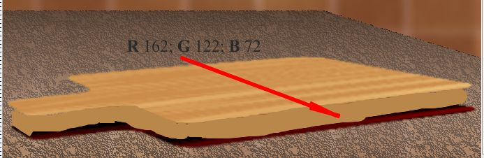

Создание кухонной доски
Сей неказистый урок назначен для начинающих, хотя может местами будет интересен и остальным «массам трудящихся». Т. к. я вовсе не художник и не дизайнер, результат моих «изысканий» может кого-то не впечатлит, но суть и полезность этого урока в том, что для создания изображения было задействовано большое количество разных инструментов и фильтров, что дает начинающему пользователю представление о них.
1. Создайте новый документ. Я выбрал размер: Ширина – 180 мм и Высота – 130 мм. Разрешение – 150 dpi. Цвет фона серый, примерно 30 % серого.
2. Нажмите комбинацию клавиш Ctrl + A, чтобы выделить всё.
3. Теперь нажмите комбинацию Ctrl + стрелка вверх, чтобы создать объект из выделения.
4. Наша первоначальная задача, создать стены кухни. Выберите цвет заливки – коричневый: R 133; G 96; B 52 (рис. 1).
5. Выберите инструмент Fill (Заливка), нажав горячую клавишу F. Щелкните на созданном объекте, чтобы залить его.
6. Теперь нам надо его сместить немного влево и вверх. Сделать это можно «на глаз». Я его сместил примерно на 5 мм вверх и 8 мм влево. Вы можете при необходимости воспользоваться помощью линеек.
7. Теперь нам нужно создать видимость того, что стены выложены плиткой. Сначала нам нужно объединить наш единственный объект с фоном, для чего нажмите Ctrl + стрелка вниз.
8. Выполните команду Effects > Distort > Tile (Эффекты > Искажение > Плитка) и установите параметры, как на рис. 2.
Наше изображение станет теперь, как на рис. 3.
9. Теперь нам нужно часть плитки закрасить в более светлый оттенок. Для этого переключитесь на инструмент Magic Wand Mask (Маска волшебной палочкой) нажав клавишу W. На панели свойств переключитесь в режим Additive mode (Аддитивный режим) и выделите каждую вторую плитку.
10. Для заливки всей выделенной области выполните команду Edit > Fill (Правка > Залить). В раскрывшемся диалоговом окне Edit Fill & Transparency (Изменение заливки и прозрачности) щелкните кнопку Edit (Изменить). В диалоговом окне Uniform Fill (Однородная заливка), на вкладке Models (Модели), выберите более светлый оттенок коричневого (я выбрал цвет: R 115; G 80; В 46). Нажмите два раза ОК, чтобы закрыть оба диалоговых окна и применить заливку (рис. 4)
11. Удалите маску, нажав Ctrl + R. Заготовка для создания стен готова. Вы можете конечно сделать по-другому, выбрав другой цвет, а не коричневый.
12. Создайте объект из фона, выполнив команду Object > Create > From Background (Объект > Создать > Из фона). Теперь создадим боковую стену. Переключитесь на инструмент Rectangle Mask (Прямоугольная маска) и при необходимости включите режим выделения Normal mode (Обычный режим), если вы не сделали этого после выполнения предыдущей операции выделения. Выделите участок стены, шириной в 3 плитки. Нажмите Ctrl + Shift + стрелка вверх, чтобы создать объект вырезанием выделения.
13. Нам нужно теперь сделать боковую стенку, применив к новому объекту перспективу. Выполните команду Effects > 3D Effects > Perspective (Эффекты > Трехмерные эффекты > Перспектива) (рис. 5).
14. Активируйте инструмент Object Pick (Выбор объекта) и подгоните с помощью манипуляторов на рамке объекта его размер и расположение до необходимого (рис. 6).
15. Теперь немного осветлим заднюю стену, для чего выделим ее в докере Objects (Объекты). Выполните команду Adjust > Contrast Enhancement (Настройка > Увеличение контрастности) и выполните настройку, как на рис. 7, а для боковой стенки, как на рис. 8.
16. Теперь объедините объект-боковую стенку с фоном, выделив его и нажав Ctrl + стрелка вниз.
17. Создайте новый объект, щелкнув на кнопке New Object (Новый объект) в докере Objects (Объекты). Активируйте инструмент Paint (Кисть), нажав клавишу Р. В качестве цвета краски выберите коричневый цвет: R 102; G 51; В 51 и закрасьте часть стен, для создания тени (рис. 9)
18. В докере Objects (Объекты), для нового объекта установите значение Opacity (Непрозрачность) равным 60, а режим наложения – Multiply. Теперь применим размытие, для чего выполните команду Effects > Blur > Gaussian Blur (Эффекты > Размытость > Размытость по Гауссу) и установите значение Radius (Радиус) равным 50. Получим изображение, как на рис. 10. Можете конечно создать другую форму тени по своему вкусу.
19. Объедините объект-тень с фоном. Теперь добавим к нашим стенам немного шума. Выполните команду Effects > Noise > Add Noise (Эффекты > Шумы > Добавить шум) и установите параметры, как на рис. 11.
Еще раз применим размывку: Effects > Blur > Gaussian Blur (Эффекты > Размытость > Размытость по Гауссу) и установите значение Radius (Радиус) равным 5,5.
20. Добавим теперь свет от окна на боковой стене. Для этого нарисуйте два белых прямоугольника и трансформируйте их. Верхнему, назначьте режим наложения Overlay, а нижнему Hard Light. К нижнему примените прозрачность, для чего воспользуйтесь инструментом Object Transparency (Прозрачность объекта). На Панели свойств выберите Fill type (Тип заливки) – Linear (Линейная), значение начальной прозрачности 70, конечной 3. И в заключение примените к обеим прямоугольникам размывку по Гауссу. Значение Radius (Радиус) установите равным 22. Теперь изображение должно получиться, как на рис. 12.
21. Теперь создадим кухонный стол. Для этого воспользуемся инструментом Freehand Mask (Маска свободной формы). Создайте маску в форме стола (рис. 13). Теперь закрасим маску кистью. В качестве цвета краски выберите цвет R 86; G 77; В 68. В докере Brush Settings (Настройки кисти) перейдите к набору параметров Brush Texture (Текстура кисти) и настройте параметры, как на рис. 14. Режим наложения выбран Multiply.
Закрасьте выделенную область кистью (рис. 15).
22. Применим к закрашенной поверхности интерактивную заливку. Для этого выберем инструмент Interactive Fill (Интерактивная заливка), клавиша G. Начальный цвет заливки белый, конечный – черный. Прозрачность начального цвета выбрана 61, конечного – 0 (рис. 16). Обратите внимание, что средняя точка заливки смещена ближе к начальному цвету заливки.
23. Применим теперь размывку. Выполните команду Effects > Blur > Gaussian Blur (Эффекты > Размытость > Размытость по Гауссу) и установите значение Radius (Радиус) равным 2,0.
Вообще говоря, при выполнении всей данной части урока, вы можете подбирать цвет, величину размытия и прочие параметры по своему вкусу. Здесь больший интерес представляют применяемые инструменты и работа с ними, а не художественная сторона.
Примечание: создание маски делалось при активном Фоне, в докере Objects (Объекты).
24. Теперь пришла очередь создания собственно самой кухонной доски. Для этого воспользуемся помощью Corel Draw, т. к. в нем нарисовать заготовку доски в 100 раз проще и быстрей, чем в PHOTO-PAINT. Создадим в Corel Draw новый документ с такими же параметрами, как и в PHOTO-PAINT (размер и разрешение). Нарисуем доску, как показано на рис. 17. После создания доски в Corel Draw, удалите абрис и залейте доску любым цветом. Скопируйте полученную доску в PHOTO-PAINT. Если PHOTO-PAINT при вставке объекта предложит разрешение, отличное от разрешения рисунка, измените его.
25. Теперь у нас в докере Objects (Объекты) появился новый объект. Применим к объекту заливку. Нажмите клавишу F, а на Панели свойств нажмите кнопки Texture (Текстура), а затем Edit fill (Изменить заливку). В диалоговом окне Texture Fill (Заливка текстурой) выберите заливку Drapes. В качестве первого цвета установите цвет: R 184; G 128; B 75, а в качестве второго: R 222; G 178; B 117 (рис. 18).
Я после изменения 1-го и 2-го цвета, добавил ее в список образцов заливки и назвал ее Пример. Я это затем говорю, чтобы вас не ввело в заблуждение название заливки на скриншоте.
26. После применения заливки, трансформируйте объект, как показано на рис. 19. (Повозиться с трансформацией конечно придётся).
27. Создадим теперь тень. Продублируйте объект (доску), нажав Ctrl + D. Дубликат появится поверх объекта-доски. Переместите нижний объект-доску немного вниз и выполните команду Adjust > Contrast Enhancement (Настройка > Увеличение контрастности) с настройками, как на рис. 20.
28. Создайте новый объект в докере Objects (Объекты). Для этого выделите самый верхний объект и нажмите кнопку New Object (Новый объект). Самый верхний объект нужно было выделить потому, что PHOTO-PAINT создает новый объект поверх текущего выделенного объекта. Переключитесь на инструмент Paint (Кисть), нажав клавишу Р. В докере Brush Settings (Настройки кисти) уберите предыдущие настройки, т. к. они сохраняются в нем после последнего использования инструмента Paint (Кисть). В качестве цвета Foreground Color (Цвета переднего плана) выберите цвет: R 162; G 122; B 72. Меняя форму и размер кисти начинайте рисовать боковую грань доски (рис. 21).

В конечном итоге, у вас должно получиться, как на рис. 22.
29. Выделите объект-боковую грань. Нажмите Ctrl + M, чтобы создать из него маску. Сохраните ее, как канал, для чего выполните команду Mask > Save > Save as Channel (Маска > Сохранить > Сохранить как канал).
30. Создайте прямоугольник и залейте его текстурной заливкой, такой же, как в пункте 25. С помощью трансформации разверните его, как на рис. 23.
Примечание: чтобы текстура выглядела нормально после трансформации, прямоугольник нужно создать «вертикальный», а не вдоль доски, т. е. узкий и высокий.
31. Теперь нам надо сделать боковую грань немного темней, чтобы она отличалась от остальной части доски. Выполните команду Adjust > Contrast Enhancement (Настройка > Увеличение контрастности) и выполните настройку, как на рис. 24.

32. Нам нужно для большей реалистичности деформировать волокна древесины на боковой грани. Для этого воспользуемся трехмерными эффектами. Выполните команду Effects > 3D Effects > Zig Zag (Эффекты > Трехмерные эффекты > Зигзаг) и настройте параметры, как на рис. 25.
33. Теперь загрузим созданную ранее маску. Используйте команду Mask > Load > Alpha 1 (Маска > Загрузить > Альфа 1) (рис. 26).
34. Выполните команду Object > Clip Mask > Create > From Mask (Объект > Маска обрезки > Создать > Из маски). Теперь доска почти готова (рис. 27).
35. Теперь осталось добавить «последние штрихи», чтобы доска получилась более удачной. Но сначала объединим все объекты между собой. Для этого выделите их в докере Objects (Объекты), щелкните правой кнопкой мыши и выберите команду Combine > Combine Objects Todether (Объединить > Объединить объекты).
Выберите на панели Toolbox (Набор инструментов) инструмент Effect (Эффект), в группе инструментов Brush Tools (Инструменты кисти). На Панели свойств в списке Brush category (Категория кисти) выберите кисть Dodge/Burn (рис. 28).
36. Меняя параметры кисти, размеры, наклон, прозрачность, мягкость и т. п., закрасьте области доски (рис. 29). На рисунке области обработки показаны приблизительно. Вы можете сделать по своему вкусу затемнение и осветление областей.
37. Объедините единственный оставшийся объект с фоном и сделайте обрезку изображения, чтобы удалить светлую область в правой части изображения. Конечное изображение показано на рис. 30.


Класс! Своеобразно. А как родилась идея создания урока именно с кухонной доской? :)
Как родилась идея? :) Я черпаю идеи в основном из подобных уроков по Фотошопу. Я никогда Фотошопом не пользовался, только видел. Но его интерфейс у меня вызывает жестокую аллергию :) Не хочу обидеть поклонников этого замечательного продукта. Но в свое время, в ходе изучения Photo-Paint пришел к печальному выводу - уроки по Photo-Paint можно сосчитать по пальцам. И хороший вопрос - что делать пользователю, который вдруг захочет его изучить? Да еще изучить его, не зная других подобных редакторов. С позволения Sancho, я решил заполнить этот пробел по мере своих сил. Почему кухонная доска? Потому что, хоть предмет сам по себе вроди простой, но задействовать пришлось много инструментов и фильтров. Это возможность в одном уроке показать работу множества средств Photo-Paint. Я в основном и стараюсь в уроках показать работу инструментов прежде всего, а не создать "шедевры Пикассо". А шедевры каждый сможет сам для себя сделать, когда будет знать как пользоваться программой. Это мое, субъективное мнение :)
:D
Данный урок может служить прекрасным образцом, написания подобного учебного материала, совмещающего доступность излагаемого с максимальным погружением в предмет своего повествования (ознакомления с Corel PHOTO-PAINT). Конечно "шедевры Пикассо" тоже желательно иметь, но это возможно в следующем уроке?! ))